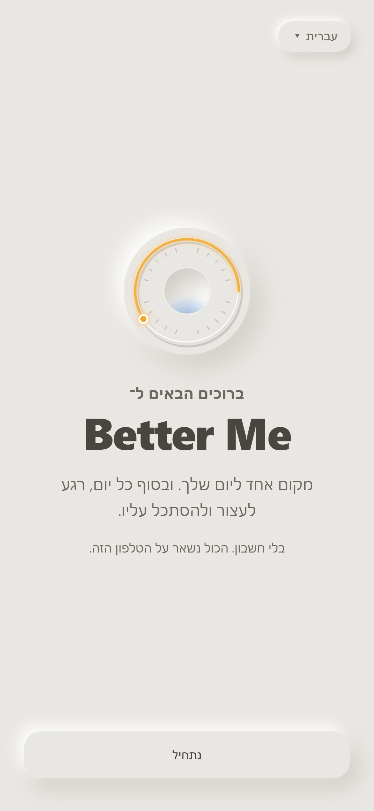
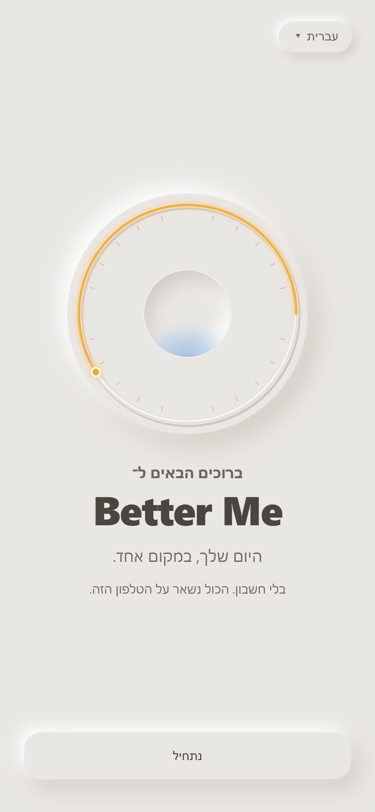
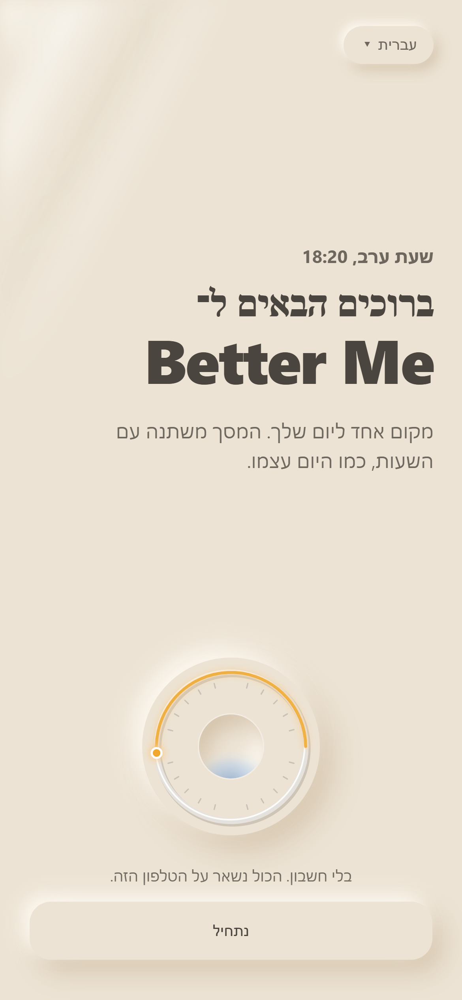

צעד 1: ברוכים הבאים ל־Better Me
קודם האפליקציה מציגה את עצמה, ורק אחר כך כל השאר. בים יגיע בצעד הבא. הסמל בכל שלוש הגרסאות הוא החוגה עצמה, כך שכבר ברגע הראשון רואים את המסך שתחיה בו כל יום. התמונות קפואות, אז לחץ על "לראות חי" כדי לראות את התנועה.

א · השם במרכז
השם Better Me גדול ובמרכז, ומעליו חוגה קטנה כמו סמל. מתחתיו משפט אחד: מקום אחד ליום שלך, ובסוף כל יום רגע לעצור ולהסתכל עליו.
הכי נקי, וכמו מסך פתיחה קלאסי.
לראות חי
ב · החוגה נבנית
החוגה עולה, השנתות מופיעות, הענבר רץ עד השעה של עכשיו והבאר נדלקת. רק אז מופיע "ברוכים הבאים ל־Better Me". זו פתיחה עם רגע של "וואו".
ההמלצה שלי: היא רואה מיד את הלב של האפליקציה, ממש חי.
לראות חי
ג · השעה שלה
מסך הפתיחה מצויר בחומר של השעה שבה היא נכנסת. כאן זו שעת הזהב, עם גוון חול וקרן שמש. השם גדול ומיושר לצד, והחוגה קטנה למטה.
מראה מיד שהאפליקציה חיה עם היום. מצד שני, כל אחד יראה פתיחה קצת אחרת.
לראות חיהערה קטנה על המילים: האפליקציה תמיד פונה לאדם אחד. "ברוכים הבאים" כתוב ברבים כי ברגע הזה עוד לא יודעים איך לפנות אליה. זו ברכה קבועה, ולדעתי היא מתאימה כאן. מיד אחרי זה, כשהיא תבחר איך לפנות אליה, הכול יעבור ליחיד.
כדי לבחור, כתוב לי א, ב, ג או שילוב.